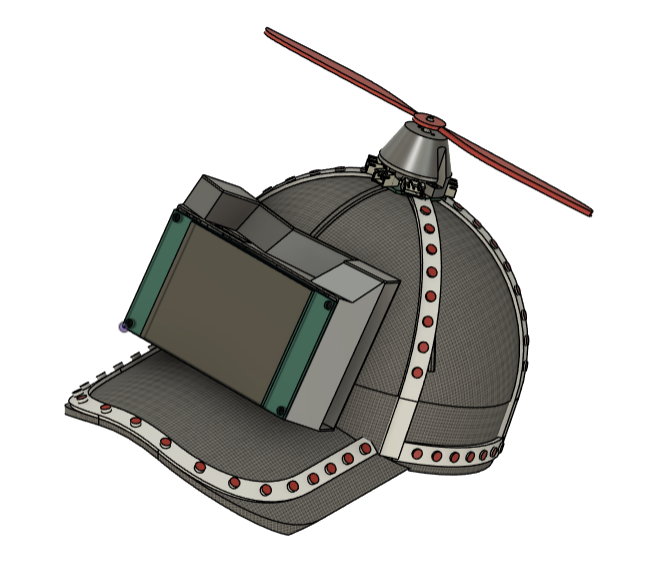

Původní myšlenka
Původní dětské zadání bylo vytvořit svítící LED tričko, které bude podle nálady měnit barvy. Navíc by na tričko mělo jít kreslit.
Zadání
Po realizačním návrhu a domluvě s komisí bylo novým cílem realizovat svítící kšiltovku (ideálně tři, pro každou třídu jednu), která:
- umí měnit barvy,
- se ovládá přes mobil (či jiné zařízení),
- má vrtulku poháněnou motorem,
- má displej pro zobrazení obrázků,
- má akcelerometr.
Navržené řešení
Zakoupit jednoduchou kšiltovku, na kterou se přidělají navržené komponenty. Ideálně budou komponenty ke kšiltovce připevněny pomocí suchých zipů (viz seznam komponent), aby bylo možné vše jednoduše z kšiltovky odstranit a kšiltovku vyprat.
Na kšiltovku se přidělají dvě navržené části:
- Display box – box umístěný na čelní části kšiltovky. Bude obsahovat řídicí desku s mikrokontrolérem, vypínací tlačítko a baterii. Z čelní strany bude box zakryt displejem.
- Top box – malý box umístěný v nejvyšším místě kšiltovky. Bude obsahovat malou DPS a motor pro vrtulku.
Po celé kšiltovce bude rozveden LED pásek (viz foto). V místě top boxu bude LED pásek přerušen a zapojen do vyrobené DPS z důvodu lepšího křížení vodičů.
Jako řídicí mikrokontrolér byl pro tento projekt vybrán ESP32, a to z důvodu podpory Wi-Fi. Konkrétně bude ESP32 fungovat jako webový server, ke kterému se bude možné připojit z libovolného zařízení (telefon, interaktivní tabule apod.). Přes webovou stránku bude možné kšiltovku ovládat.
Minimální požadavky na ovládání přes webovou stránku:
- volba nálady (šťastný, smutný apod.),
- kreslení na displej,
- zobrazení stavu baterie.
Obecně se po softwarové stránce projekt nebrání dalším rozšířením – několik řádků kódu navíc může výrazně zvýšit jeho atraktivitu. Lze například využít data z akcelerometru, ovládat otáčky vrtulky nebo zobrazovat obrázky na displeji. Možnosti jsou v podstatě neomezené.
Mikrokontrolér bude dále obsluhovat veškeré periferie. Programování bude probíhat v prostředí Arduino IDE.
Jak již bylo zmíněno, v obou boxech se bude nacházet DPS. V display boxu se bude nacházet hlavní řídicí deska, zatímco v top boxu menší DPS sloužící ke křížení LED pásku a uchycení motoru.

Výroba
Jako první se vyrobí první kus kšiltovky, na kterém se odhalí všechny nedostatky. Jakmile bude tento kus otestovaný a plně funkční, může se souběžně vyvíjet software na již hotovém prototypu a zároveň vyrábět zbývající dvě kšiltovky (pokud na ně budou finance – měly by být).
Navržené boxy se vytisknou na 3D tiskárně. Kompletní 3D modely jsou vedeny mimo GitHubový repozitář, a to ve sdíleném projektu přímo v Autodesk Fusion. Návrhy lze samozřejmě dále upravovat a v případě zájmu si může každý navrhnout i vlastní design.
Desky plošných spojů jsou navrhovány v programu KiCad. Menší deska, která bude umístěna v top boxu, je již kompletně navržena. Původní myšlenka byla taková, aby ji bylo možné vyrobit na střední škole.
Pro hlavní řídicí desku bylo navrženo schéma zapojení. Dále je otevřená otázka, zda si tuto desku bude chtít střední škola navrhnout sama. Schéma je k dispozici v GitHubovém repozitáři.